pacman::p_load(sf, tmap, tidyverse, sfdep, readxl, Kendall, plotly, plyr, zoo)Take Home Exercise 2: Spatio-temporal Analysis of COVID-19 Vaccination Trends at the Sub-district Level, DKI Jakarta
1. Understanding the scene
Since late December 2019, an outbreak of a novel coronavirus disease (COVID-19; previously known as 2019-nCoV) was reported in Wuhan, China, which had subsequently affected 210 countries worldwide. In general, COVID-19 is an acute resolved disease but it can also be deadly, with a 2% case fatality rate.
The COVID-19 vaccination in Indonesia is an ongoing mass immunisation in response to the COVID-19 pandemic in Indonesia. On 13 January 2021, the program commenced when President Joko Widodo was vaccinated at the presidential palace. In terms of total doses given, Indonesia ranks third in Asia and fifth in the world.
According to wikipedia, as of 5 February 2023 at 18:00 WIB (UTC+7), 204,266,655 people had received the first dose of the vaccine and 175,131,893 people had been fully vaccinated; 69,597,474 of them had been inoculated with the booster or the third dose, while 1,585,164 had received the fourth dose. Jakarta has the highest percentage of population fully vaccinated with 103.46%, followed by Bali and Special Region of Yogyakarta with 85.45% and 83.02% respectively.
Despite its compactness, the cumulative vaccination rate are not evenly distributed within DKI Jakarta. The question is where are the sub-districts with relatively higher number of vaccination rate and how they changed over time.
1.1 Objectives
Exploratory Spatial Data Analysis (ESDA) hold tremendous potential to address complex problems facing society. In this study, you are tasked to apply appropriate Local Indicators of Spatial Association (LISA) and Emerging Hot Spot Analysis (EHSA) to undercover the spatio-temporal trends of COVID-19 vaccination in DKI Jakarta.
1.2 Our Task
1.2.1 Choropleth Mapping and Analysis
Compute the monthly vaccination rate from July 2021 to June 2022 at sub-district (also known as kelurahan in Bahasa Indonesia) level,
Prepare the monthly vaccination rate maps by using appropriate tmap functions,
Describe the spatial patterns revealed by the choropleth maps (not more than 200 words).
1.2.2 Local Gi* Analysis
With reference to the vaccination rate maps prepared in ESDA:
Compute local Gi* values of the monthly vaccination rate,
Display the Gi* maps of the monthly vaccination rate. The maps should only display the significant (i.e. p-value < 0.05)
With reference to the analysis results, draw statistical conclusions (not more than 250 words).
1.2.3 Emerging Hot Spot Analysis (EHSA)
With reference to the local Gi* values of the vaccination rate maps prepared in the previous section:
Perform Mann-Kendall Test by using the spatio-temporal local Gi* values,
Select three sub-districts and describe the temporal trends revealed (not more than 250 words), and
Prepared a EHSA map of the Gi* values of vaccination rate. The maps should only display the significant (i.e. p-value < 0.05).
With reference to the EHSA map prepared, describe the spatial patterns revelaed. (not more than 250 words).
1.3 Data
1.3.1 Apstial Data
For the purpose of this assignment, data from Riwayat File Vaksinasi DKI Jakarta will be used. Daily vaccination data are provides. You are only required to download either the first day of the month or last day of the month of the study period.
1.3.2 Geospatial Data
For the purpose of this study, DKI Jakarta administration boundary 2019 will be used. The data set can be downloaded at Indonesia Geospatial portal, specifically at this page.
Note
The national Projected Coordinates Systems of Indonesia is DGN95 / Indonesia TM-3 zone 54.1.
Exclude all the outer islands from the DKI Jakarta sf data frame, and
Retain the first nine fields in the DKI Jakarta sf data frame. The ninth field JUMLAH_PEN = Total Population.
2. Getting Started
2.1 Importing of Packages
2.2 Handling Geospatial Data
2.2.1 Importing Geospatial Data set
geoJAR <- st_read(dsn = "data/geospatial/",
layer = "BATAS_DESA_DESEMBER_2019_DUKCAPIL_DKI_JAKARTA") %>%
st_transform(crs=26392)Reading layer `BATAS_DESA_DESEMBER_2019_DUKCAPIL_DKI_JAKARTA' from data source
`C:\Users\Daniel\Desktop\Github\IS419\IS415-GAA\Take-Home_Ex\Take-Home_Ex02\data\geospatial'
using driver `ESRI Shapefile'
Simple feature collection with 269 features and 161 fields
Geometry type: MULTIPOLYGON
Dimension: XY
Bounding box: xmin: 106.3831 ymin: -6.370815 xmax: 106.9728 ymax: -5.184322
Geodetic CRS: WGS 842.2.2 Checking for Missing Values
sum(is.na(geoJAR))[1] 14sapply(geoJAR, function(x) sum(is.na(x))) OBJECT_ID KODE_DESA DESA KODE PROVINSI KAB_KOTA KECAMATAN
0 0 0 0 0 2 2
DESA_KELUR JUMLAH_PEN JUMLAH_KK LUAS_WILAY KEPADATAN PERPINDAHA JUMLAH_MEN
2 0 0 0 0 0 0
PERUBAHAN WAJIB_KTP SILAM KRISTEN KHATOLIK HINDU BUDHA
0 0 0 0 0 0 0
KONGHUCU KEPERCAYAA PRIA WANITA BELUM_KAWI KAWIN CERAI_HIDU
0 0 0 0 0 0 0
CERAI_MATI U0 U5 U10 U15 U20 U25
0 0 0 0 0 0 0
U30 U35 U40 U45 U50 U55 U60
0 0 0 0 0 0 0
U65 U70 U75 TIDAK_BELU BELUM_TAMA TAMAT_SD SLTP
0 0 0 0 0 0 0
SLTA DIPLOMA_I DIPLOMA_II DIPLOMA_IV STRATA_II STRATA_III BELUM_TIDA
0 0 0 0 0 0 0
APARATUR_P TENAGA_PEN WIRASWASTA PERTANIAN NELAYAN AGAMA_DAN PELAJAR_MA
0 0 0 0 0 0 0
TENAGA_KES PENSIUNAN LAINNYA GENERATED KODE_DES_1 BELUM_ MENGUR_
0 0 0 2 2 0 0
PELAJAR_ PENSIUNA_1 PEGAWAI_ TENTARA KEPOLISIAN PERDAG_ PETANI
0 0 0 0 0 0 0
PETERN_ NELAYAN_1 INDUSTR_ KONSTR_ TRANSP_ KARYAW_ KARYAW1
0 0 0 0 0 0 0
KARYAW1_1 KARYAW1_12 BURUH BURUH_ BURUH1 BURUH1_1 PEMBANT_
0 0 0 0 0 0 0
TUKANG TUKANG_1 TUKANG_12 TUKANG__13 TUKANG__14 TUKANG__15 TUKANG__16
0 0 0 0 0 0 0
TUKANG__17 PENATA PENATA_ PENATA1_1 MEKANIK SENIMAN_ TABIB
0 0 0 0 0 0 0
PARAJI_ PERANCA_ PENTER_ IMAM_M PENDETA PASTOR WARTAWAN
0 0 0 0 0 0 0
USTADZ JURU_M PROMOT ANGGOTA_ ANGGOTA1 ANGGOTA1_1 PRESIDEN
0 0 0 0 0 0 0
WAKIL_PRES ANGGOTA1_2 ANGGOTA1_3 DUTA_B GUBERNUR WAKIL_GUBE BUPATI
0 0 0 0 0 0 0
WAKIL_BUPA WALIKOTA WAKIL_WALI ANGGOTA1_4 ANGGOTA1_5 DOSEN GURU
0 0 0 0 0 0 0
PILOT PENGACARA_ NOTARIS ARSITEK AKUNTA_ KONSUL_ DOKTER
0 0 0 0 0 0 0
BIDAN PERAWAT APOTEK_ PSIKIATER PENYIA_ PENYIA1 PELAUT
0 0 0 0 0 0 0
PENELITI SOPIR PIALAN PARANORMAL PEDAGA_ PERANG_ KEPALA_
0 0 0 0 0 0 0
BIARAW_ WIRASWAST_ LAINNYA_12 LUAS_DESA KODE_DES_3 DESA_KEL_1 KODE_12
0 0 0 0 2 2 0
geometry
0 2.2.3 Removing Missing Values
geoJAR[rowSums(is.na(geoJAR))!=0,]Simple feature collection with 2 features and 161 fields
Geometry type: MULTIPOLYGON
Dimension: XY
Bounding box: xmin: 16026250 ymin: -16069470 xmax: 16036970 ymax: -16060460
Projected CRS: Minna / Nigeria Mid Belt
OBJECT_ID KODE_DESA DESA KODE PROVINSI KAB_KOTA KECAMATAN
243 25645 31888888 DANAU SUNTER 318888 DKI JAKARTA <NA> <NA>
244 25646 31888888 DANAU SUNTER DLL 318888 DKI JAKARTA <NA> <NA>
DESA_KELUR JUMLAH_PEN JUMLAH_KK LUAS_WILAY KEPADATAN PERPINDAHA JUMLAH_MEN
243 <NA> 0 0 0 0 0 0
244 <NA> 0 0 0 0 0 0
PERUBAHAN WAJIB_KTP SILAM KRISTEN KHATOLIK HINDU BUDHA KONGHUCU KEPERCAYAA
243 0 0 0 0 0 0 0 0 0
244 0 0 0 0 0 0 0 0 0
PRIA WANITA BELUM_KAWI KAWIN CERAI_HIDU CERAI_MATI U0 U5 U10 U15 U20 U25
243 0 0 0 0 0 0 0 0 0 0 0 0
244 0 0 0 0 0 0 0 0 0 0 0 0
U30 U35 U40 U45 U50 U55 U60 U65 U70 U75 TIDAK_BELU BELUM_TAMA TAMAT_SD SLTP
243 0 0 0 0 0 0 0 0 0 0 0 0 0 0
244 0 0 0 0 0 0 0 0 0 0 0 0 0 0
SLTA DIPLOMA_I DIPLOMA_II DIPLOMA_IV STRATA_II STRATA_III BELUM_TIDA
243 0 0 0 0 0 0 0
244 0 0 0 0 0 0 0
APARATUR_P TENAGA_PEN WIRASWASTA PERTANIAN NELAYAN AGAMA_DAN PELAJAR_MA
243 0 0 0 0 0 0 0
244 0 0 0 0 0 0 0
TENAGA_KES PENSIUNAN LAINNYA GENERATED KODE_DES_1 BELUM_ MENGUR_ PELAJAR_
243 0 0 0 <NA> <NA> 0 0 0
244 0 0 0 <NA> <NA> 0 0 0
PENSIUNA_1 PEGAWAI_ TENTARA KEPOLISIAN PERDAG_ PETANI PETERN_ NELAYAN_1
243 0 0 0 0 0 0 0 0
244 0 0 0 0 0 0 0 0
INDUSTR_ KONSTR_ TRANSP_ KARYAW_ KARYAW1 KARYAW1_1 KARYAW1_12 BURUH BURUH_
243 0 0 0 0 0 0 0 0 0
244 0 0 0 0 0 0 0 0 0
BURUH1 BURUH1_1 PEMBANT_ TUKANG TUKANG_1 TUKANG_12 TUKANG__13 TUKANG__14
243 0 0 0 0 0 0 0 0
244 0 0 0 0 0 0 0 0
TUKANG__15 TUKANG__16 TUKANG__17 PENATA PENATA_ PENATA1_1 MEKANIK SENIMAN_
243 0 0 0 0 0 0 0 0
244 0 0 0 0 0 0 0 0
TABIB PARAJI_ PERANCA_ PENTER_ IMAM_M PENDETA PASTOR WARTAWAN USTADZ JURU_M
243 0 0 0 0 0 0 0 0 0 0
244 0 0 0 0 0 0 0 0 0 0
PROMOT ANGGOTA_ ANGGOTA1 ANGGOTA1_1 PRESIDEN WAKIL_PRES ANGGOTA1_2
243 0 0 0 0 0 0 0
244 0 0 0 0 0 0 0
ANGGOTA1_3 DUTA_B GUBERNUR WAKIL_GUBE BUPATI WAKIL_BUPA WALIKOTA WAKIL_WALI
243 0 0 0 0 0 0 0 0
244 0 0 0 0 0 0 0 0
ANGGOTA1_4 ANGGOTA1_5 DOSEN GURU PILOT PENGACARA_ NOTARIS ARSITEK AKUNTA_
243 0 0 0 0 0 0 0 0 0
244 0 0 0 0 0 0 0 0 0
KONSUL_ DOKTER BIDAN PERAWAT APOTEK_ PSIKIATER PENYIA_ PENYIA1 PELAUT
243 0 0 0 0 0 0 0 0 0
244 0 0 0 0 0 0 0 0 0
PENELITI SOPIR PIALAN PARANORMAL PEDAGA_ PERANG_ KEPALA_ BIARAW_ WIRASWAST_
243 0 0 0 0 0 0 0 0 0
244 0 0 0 0 0 0 0 0 0
LAINNYA_12 LUAS_DESA KODE_DES_3 DESA_KEL_1 KODE_12
243 0 0 <NA> <NA> 0
244 0 0 <NA> <NA> 0
geometry
243 MULTIPOLYGON (((16026561 -1...
244 MULTIPOLYGON (((16030782 -1...2.2.4 Checking and Transforming Coordinate System
Checking
st_crs(geoJAR)Coordinate Reference System:
User input: EPSG:26392
wkt:
PROJCRS["Minna / Nigeria Mid Belt",
BASEGEOGCRS["Minna",
DATUM["Minna",
ELLIPSOID["Clarke 1880 (RGS)",6378249.145,293.465,
LENGTHUNIT["metre",1]]],
PRIMEM["Greenwich",0,
ANGLEUNIT["degree",0.0174532925199433]],
ID["EPSG",4263]],
CONVERSION["Nigeria Mid Belt",
METHOD["Transverse Mercator",
ID["EPSG",9807]],
PARAMETER["Latitude of natural origin",4,
ANGLEUNIT["degree",0.0174532925199433],
ID["EPSG",8801]],
PARAMETER["Longitude of natural origin",8.5,
ANGLEUNIT["degree",0.0174532925199433],
ID["EPSG",8802]],
PARAMETER["Scale factor at natural origin",0.99975,
SCALEUNIT["unity",1],
ID["EPSG",8805]],
PARAMETER["False easting",670553.98,
LENGTHUNIT["metre",1],
ID["EPSG",8806]],
PARAMETER["False northing",0,
LENGTHUNIT["metre",1],
ID["EPSG",8807]]],
CS[Cartesian,2],
AXIS["(E)",east,
ORDER[1],
LENGTHUNIT["metre",1]],
AXIS["(N)",north,
ORDER[2],
LENGTHUNIT["metre",1]],
USAGE[
SCOPE["Engineering survey, topographic mapping."],
AREA["Nigeria between 6°30'E and 10°30'E, onshore and offshore shelf."],
BBOX[3.57,6.5,13.53,10.51]],
ID["EPSG",26392]]Transforming
geoJARCOR23845 <- st_transform(geoJAR, 23845)
st_crs(geoJARCOR23845)Coordinate Reference System:
User input: EPSG:23845
wkt:
PROJCRS["DGN95 / Indonesia TM-3 zone 54.1",
BASEGEOGCRS["DGN95",
DATUM["Datum Geodesi Nasional 1995",
ELLIPSOID["WGS 84",6378137,298.257223563,
LENGTHUNIT["metre",1]]],
PRIMEM["Greenwich",0,
ANGLEUNIT["degree",0.0174532925199433]],
ID["EPSG",4755]],
CONVERSION["Indonesia TM-3 zone 54.1",
METHOD["Transverse Mercator",
ID["EPSG",9807]],
PARAMETER["Latitude of natural origin",0,
ANGLEUNIT["degree",0.0174532925199433],
ID["EPSG",8801]],
PARAMETER["Longitude of natural origin",139.5,
ANGLEUNIT["degree",0.0174532925199433],
ID["EPSG",8802]],
PARAMETER["Scale factor at natural origin",0.9999,
SCALEUNIT["unity",1],
ID["EPSG",8805]],
PARAMETER["False easting",200000,
LENGTHUNIT["metre",1],
ID["EPSG",8806]],
PARAMETER["False northing",1500000,
LENGTHUNIT["metre",1],
ID["EPSG",8807]]],
CS[Cartesian,2],
AXIS["easting (X)",east,
ORDER[1],
LENGTHUNIT["metre",1]],
AXIS["northing (Y)",north,
ORDER[2],
LENGTHUNIT["metre",1]],
USAGE[
SCOPE["Cadastre."],
AREA["Indonesia - onshore east of 138°E."],
BBOX[-9.19,138,-1.49,141.01]],
ID["EPSG",23845]]2.2.5 Data Visualization
plot(st_geometry(geoJARCOR23845))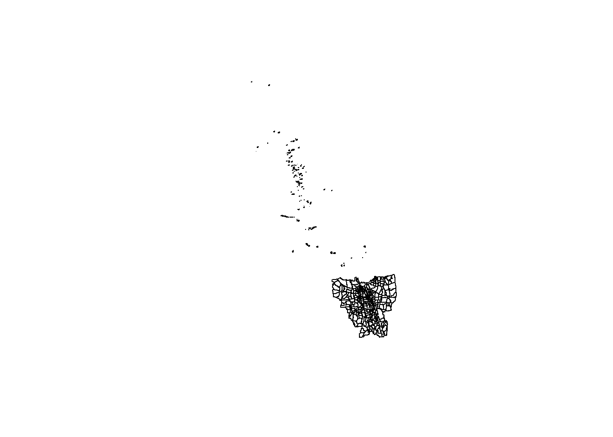
2.2.5.1 Removing Columns not used
geoJARCOR23845 <- geoJARCOR23845 %>%
dplyr::select(c(1:9))2.2.5.2 Removing Outer Islands
jarMain <- geoJARCOR23845 %>%
filter(KAB_KOTA %in%
c("JAKARTA BARAT",
"JAKARTA PUSAT",
"JAKARTA UTARA",
"JAKARTA SELATAN",
"JAKARTA TIMUR"))2.2.5.3 Renaming Columns for Readabilty
jarMain <- jarMain %>%
dplyr::rename(
Object_Id = OBJECT_ID,
Province = PROVINSI,
City = KAB_KOTA,
District = KECAMATAN,
Village_Code = KODE_DESA,
Village = DESA,
Sub_District = DESA_KELUR,
Code = KODE,
Total_Population = JUMLAH_PEN
)
glimpse(jarMain)Rows: 261
Columns: 10
$ Object_Id <dbl> 25477, 25478, 25397, 25400, 25390, 25391, 25394, 2538…
$ Village_Code <chr> "3173031006", "3173031007", "3171031003", "3171031006…
$ Village <chr> "KEAGUNGAN", "GLODOK", "HARAPAN MULIA", "CEMPAKA BARU…
$ Code <dbl> 317303, 317303, 317103, 317103, 317102, 317102, 31710…
$ Province <chr> "DKI JAKARTA", "DKI JAKARTA", "DKI JAKARTA", "DKI JAK…
$ City <chr> "JAKARTA BARAT", "JAKARTA BARAT", "JAKARTA PUSAT", "J…
$ District <chr> "TAMAN SARI", "TAMAN SARI", "KEMAYORAN", "KEMAYORAN",…
$ Sub_District <chr> "KEAGUNGAN", "GLODOK", "HARAPAN MULIA", "CEMPAKA BARU…
$ Total_Population <dbl> 21609, 9069, 29085, 41913, 15793, 33383, 35906, 21828…
$ geometry <MULTIPOLYGON [m]> MULTIPOLYGON (((-3627004 69..., MULTIPOL…2.2.5.4 Visualizing Map
tm_shape(jarMain) +
tm_polygons("City")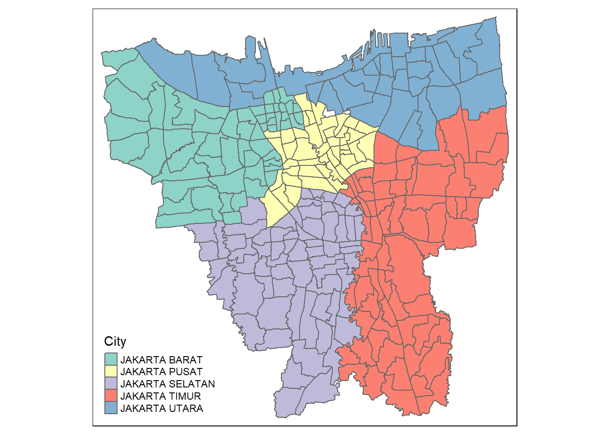
2.3 Handling Aspatial Data
2.3.1 Importing Aspatial Data
July 21 - Jun 22
jul2021 <- readxl::read_xlsx("data/aspatial/Data Vaksinasi Berbasis Kelurahan (31 Juli 2021).xlsx")
aug2021 <- readxl::read_xlsx("data/aspatial/Data Vaksinasi Berbasis Kelurahan (31 Agustus 2021).xlsx")
sep2021 <- readxl::read_xlsx("data/aspatial/Data Vaksinasi Berbasis Kelurahan (30 September 2021).xlsx")
oct2021 <- readxl::read_xlsx("data/aspatial/Data Vaksinasi Berbasis Kelurahan (31 Oktober 2021).xlsx")
nov2021 <- readxl::read_xlsx("data/aspatial/Data Vaksinasi Berbasis Kelurahan (30 November 2021).xlsx")
dec2021 <- readxl::read_xlsx("data/aspatial/Data Vaksinasi Berbasis Kelurahan (31 Desember 2021).xlsx")
jan2022 <- readxl::read_xlsx("data/aspatial/Data Vaksinasi Berbasis Kelurahan (31 Januari 2022).xlsx")
feb2022 <- readxl::read_xlsx("data/aspatial/Data Vaksinasi Berbasis Kelurahan (27 Februari 2022).xlsx")
mar2022 <- readxl::read_xlsx("data/aspatial/Data Vaksinasi Berbasis Kelurahan (31 Maret 2022).xlsx")
apr2022 <- readxl::read_xlsx("data/aspatial/Data Vaksinasi Berbasis Kelurahan (30 April 2022).xlsx")
may2022 <- readxl::read_xlsx("data/aspatial/Data Vaksinasi Berbasis Kelurahan (31 Mei 2022).xlsx")
jun2022 <- readxl::read_xlsx("data/aspatial/Data Vaksinasi Berbasis Kelurahan (30 Juni 2022).xlsx")2.3.2 Function Creation
Reads files
Remove header row
Search for “kelurahan” and save in startpoint
Save “date, kobe kelurahan, kelurahan, sasaran, belum vaksin”
preprocessingFun <- function(files){
result <- read_xlsx(files)[-1,]
startpoint <- gregexpr(pattern="Kelurahan", files)[[1]] + 11
result$Date <- substr(files, startpoint, nchar(files)-6)
result <- result %>%
select("Date",
"KODE KELURAHAN",
"KELURAHAN",
"SASARAN",
"BELUM VAKSIN")
return(result)
}2.3.3 Applying Functions to Data Files
listFiles <-list.files(path = "data/aspatial", pattern = "*.xlsx", full.names=TRUE)
df_listFiles <- lapply(seq_along(listFiles), function(x) preprocessingFun(listFiles[x]))vaccJak <- ldply(df_listFiles, data.frame)glimpse(vaccJak)Rows: 3,204
Columns: 5
$ Date <chr> "27 Februari 2022", "27 Februari 2022", "27 Februari 20…
$ KODE.KELURAHAN <chr> "3172051003", "3173041007", "3175041005", "3175031003",…
$ KELURAHAN <chr> "ANCOL", "ANGKE", "BALE KAMBANG", "BALI MESTER", "BAMBU…
$ SASARAN <dbl> 23947, 29381, 29074, 9752, 26285, 21566, 23886, 47898, …
$ BELUM.VAKSIN <dbl> 4592, 5319, 5903, 1649, 4030, 3950, 3344, 9382, 3772, 7…2.3.4 Renaming Columns
vaccJak <- vaccJak %>%
dplyr::rename(
Date = Date,
Sub_District_Code = KODE.KELURAHAN,
Sub_District = KELURAHAN,
Target = SASARAN,
Not_Yet_Vaccinated = BELUM.VAKSIN
)2.3.5 Changing Locale Date for File Reading
2.3.5.1 Changing for Windows
Sys.setlocale(locale="ind")[1] "LC_COLLATE=Indonesian_Indonesia.1252;LC_CTYPE=Indonesian_Indonesia.1252;LC_MONETARY=Indonesian_Indonesia.1252;LC_NUMERIC=C;LC_TIME=Indonesian_Indonesia.1252"#Sys.setlocale("LC_TIME", "id_ID.UTF-8")
#default_locale()2.3.5.2 Changing for Mac - Still solving
{r}
locale(
date_names = "id",
date_format ="%d %B %Y",
tz = "UTC",
encoding = "UTF-8"
)2.3.6 Formating Data
vaccJak$Date <- c(vaccJak$Date) %>%
as.Date(vaccJak$Date, format ="%d %B %Y")
glimpse(vaccJak)Rows: 3,204
Columns: 5
$ Date <date> 2022-02-27, 2022-02-27, 2022-02-27, 2022-02-27, 20~
$ Sub_District_Code <chr> "3172051003", "3173041007", "3175041005", "31750310~
$ Sub_District <chr> "ANCOL", "ANGKE", "BALE KAMBANG", "BALI MESTER", "B~
$ Target <dbl> 23947, 29381, 29074, 9752, 26285, 21566, 23886, 478~
$ Not_Yet_Vaccinated <dbl> 4592, 5319, 5903, 1649, 4030, 3950, 3344, 9382, 377~2.3.7 Checking for Missing Values
sum(is.na(vaccJak))[1] 0sapply(vaccJak, function(x) sum(is.na(x))) Date Sub_District_Code Sub_District Target
0 0 0 0
Not_Yet_Vaccinated
0 3. Performing Relational Join
comJak <- left_join(jarMain, vaccJak,
by=c(
"Village_Code"="Sub_District_Code",
"Sub_District"="Sub_District")
)glimpse(comJak)Rows: 3,033
Columns: 13
$ Object_Id <dbl> 25477, 25477, 25477, 25477, 25477, 25477, 25477, 25~
$ Village_Code <chr> "3173031006", "3173031006", "3173031006", "31730310~
$ Village <chr> "KEAGUNGAN", "KEAGUNGAN", "KEAGUNGAN", "KEAGUNGAN",~
$ Code <dbl> 317303, 317303, 317303, 317303, 317303, 317303, 317~
$ Province <chr> "DKI JAKARTA", "DKI JAKARTA", "DKI JAKARTA", "DKI J~
$ City <chr> "JAKARTA BARAT", "JAKARTA BARAT", "JAKARTA BARAT", ~
$ District <chr> "TAMAN SARI", "TAMAN SARI", "TAMAN SARI", "TAMAN SA~
$ Sub_District <chr> "KEAGUNGAN", "KEAGUNGAN", "KEAGUNGAN", "KEAGUNGAN",~
$ Total_Population <dbl> 21609, 21609, 21609, 21609, 21609, 21609, 21609, 21~
$ Date <date> 2022-02-27, 2022-04-30, 2022-06-30, 2021-11-30, 20~
$ Target <dbl> 17387, 17387, 17387, 17387, 17387, 17387, 17387, 17~
$ Not_Yet_Vaccinated <dbl> 2755, 2593, 2553, 3099, 4203, 6054, 2924, 2783, 812~
$ geometry <MULTIPOLYGON [m]> MULTIPOLYGON (((-3627004 69..., MULTIP~3.1 Visualizing Combined Jakarta
tmap_mode("plot")
totalPop = tm_shape(comJak)+
tm_fill("Total_Population") +
tm_layout(main.title = "Total Population Count",
main.title.position = "center",
main.title.size = 1.2,
legend.height = 0.45,
legend.width = 0.35,
frame = TRUE) +
tm_borders(alpha = 0.5) +
tm_compass(type="8star", size = 2) +
tm_scale_bar() +
tm_grid(alpha = 0.2)
target = tm_shape(comJak)+
tm_fill("Target") +
tm_borders(alpha = 0.5) +
tm_layout(main.title="Target Count",
main.title.position = "center",
main.title.size = 1.2,
legend.height = 0.45,
legend.width = 0.35,
frame = TRUE) +
tm_borders(alpha = 0.5) +
tm_compass(type="8star", size = 2) +
tm_scale_bar() +
tm_grid(alpha = 0.2)
noVac = tm_shape(comJak)+
tm_fill("Not_Yet_Vaccinated") +
tm_borders(alpha = 0.5) +
tm_layout(main.title="Not Yet Vaccinated Count",
main.title.position = "center",
main.title.size = 1.2,
legend.height = 0.45,
legend.width = 0.35,
frame = TRUE) +
tm_borders(alpha = 0.5) +
tm_compass(type="8star", size = 2) +
tm_scale_bar() +
tm_grid(alpha = 0.2)3.1.1 Total Population Count
totalPop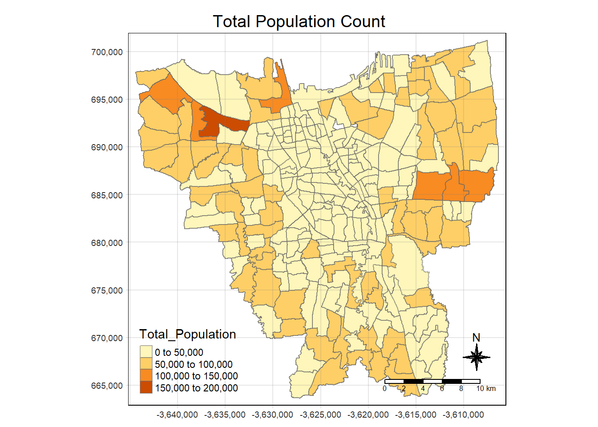
3.1.2 Target Count
target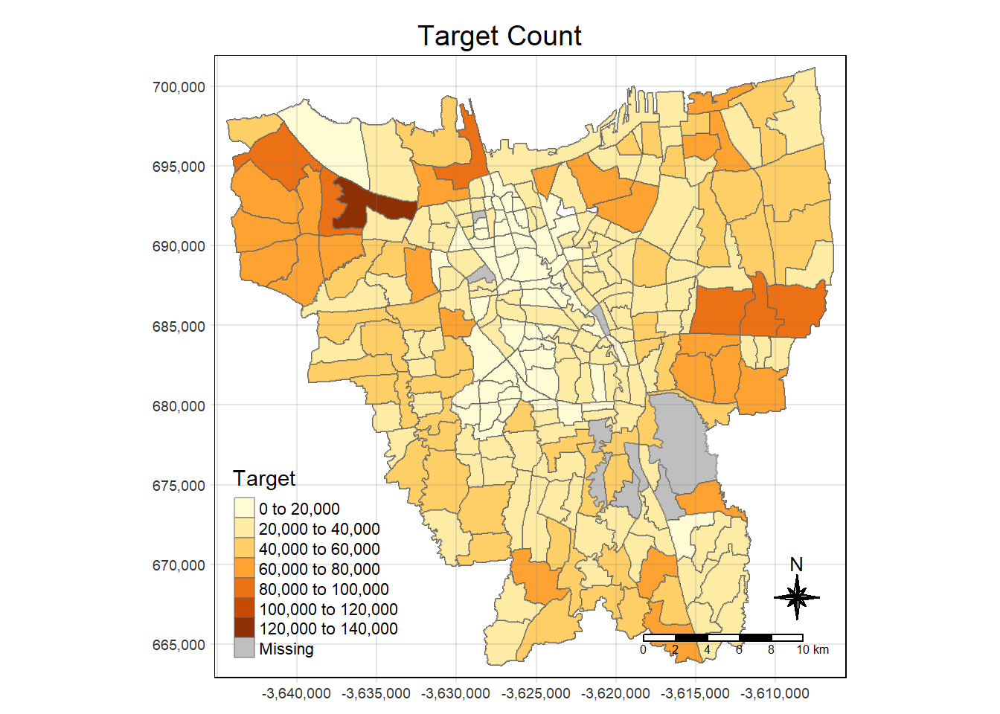
3.1.3 Not Yet Vaccinated Count
noVac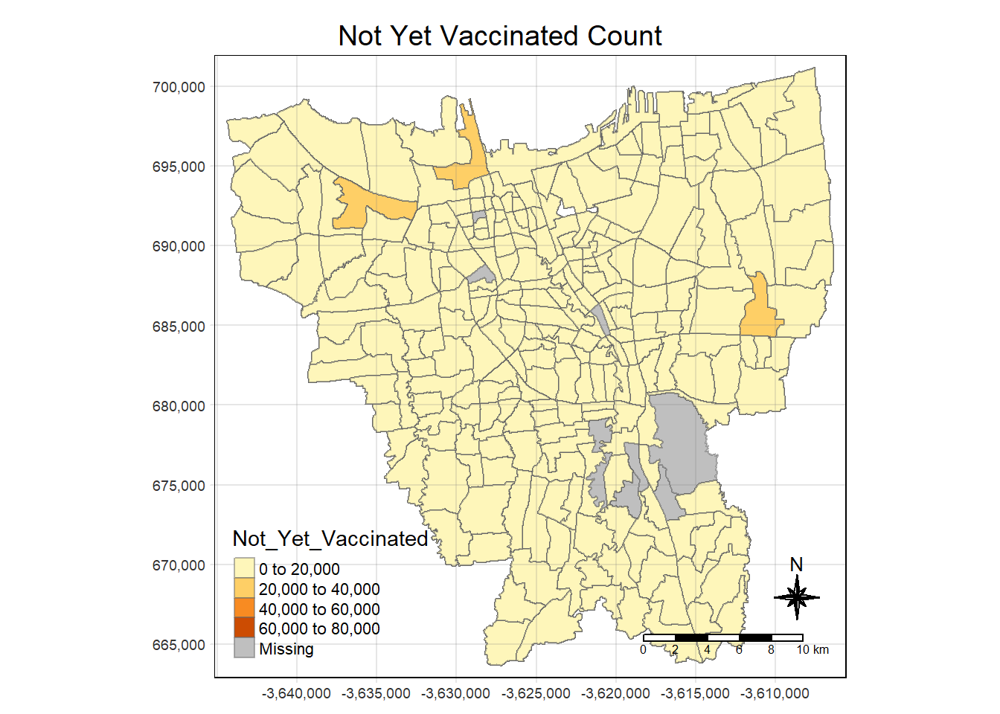
3.2 Finding Reason for “Missing” Legend
3.2.1 Double Checking for Missing Value
sum(is.na(jarMain))[1] 0sapply(jarMain, function(x) sum(is.na(x))) Object_Id Village_Code Village Code
0 0 0 0
Province City District Sub_District
0 0 0 0
Total_Population geometry
0 0 sum(is.na(vaccJak))[1] 0sapply(vaccJak, function(x) sum(is.na(x))) Date Sub_District_Code Sub_District Target
0 0 0 0
Not_Yet_Vaccinated
0 3.2.2 Checking Join Mismatch
jakartaSD <- c(jarMain$Sub_District)
vaccinationSD <- c(vaccJak$Sub_District)3.2.2.1 Checking for Unique SD
unique(jakartaSD[!(jakartaSD %in% vaccinationSD)])[1] "KRENDANG" "RAWAJATI" "TENGAH"
[4] "BALEKAMBANG" "PINANGRANTI" "JATIPULO"
[7] "PALMERIAM" "KRAMATJATI" "HALIM PERDANA KUSUMA"unique(vaccinationSD[!(vaccinationSD %in% jakartaSD)]) [1] "BALE KAMBANG" "HALIM PERDANA KUSUMAH" "JATI PULO"
[4] "KAMPUNG TENGAH" "KERENDANG" "KRAMAT JATI"
[7] "PAL MERIAM" "PINANG RANTI" "PULAU HARAPAN"
[10] "PULAU KELAPA" "PULAU PANGGANG" "PULAU PARI"
[13] "PULAU TIDUNG" "PULAU UNTUNG JAWA" "RAWA JATI" 3.2.2.2 Fixing Naming Issue
jarMain$Sub_District[jarMain$Sub_District == 'BALEKAMBANG'] <- 'BALE KAMBANG'
jarMain$Sub_District[jarMain$Sub_District == 'HALIM PERDANA KUSUMA'] <- 'HALIM PERDANA KUSUMAH'
jarMain$Sub_District[jarMain$Sub_District == 'JATIPULO'] <- 'JATI PULO'
jarMain$Sub_District[jarMain$Sub_District == 'KALI BARU'] <- 'KALIBARU'
jarMain$Sub_District[jarMain$Sub_District == 'TENGAH'] <- 'KAMPUNG TENGAH'
jarMain$Sub_District[jarMain$Sub_District == 'KRAMATJATI'] <- 'KRAMAT JATI'
jarMain$Sub_District[jarMain$Sub_District == 'KRENDANG'] <- 'KERENDANG'
jarMain$Sub_District[jarMain$Sub_District == 'PALMERIAM'] <- 'PAL MERIAM'
jarMain$Sub_District[jarMain$Sub_District == 'PINANGRANTI'] <- 'PINANG RANTI'
jarMain$Sub_District[jarMain$Sub_District == 'RAWAJATI'] <- 'RAWA JATI'3.2.2.3 Removing Mismatched SD
vaccJak <- vaccJak[!(vaccJak$Sub_District=="PULAU HARAPAN"
| vaccJak$Sub_District=="PULAU KELAPA"
| vaccJak$Sub_District=="PULAU PANGGANG"
| vaccJak$Sub_District=="PULAU PARI"
| vaccJak$Sub_District=="PULAU TIDUNG"
| vaccJak$Sub_District=="PULAU UNTUNG JAWA"),
]3.3 Rejoining Data after Fix
comJak <- left_join(jarMain, vaccJak,
by=c(
"Village_Code"="Sub_District_Code",
"Sub_District"="Sub_District")
)3.4 Visualizing Combined Jakarta Again
tmap_mode("plot")
totalPop = tm_shape(comJak)+
tm_fill("Total_Population") +
tm_layout(main.title = "Total Population Count",
main.title.position = "center",
main.title.size = 1.2,
legend.height = 0.45,
legend.width = 0.35,
frame = TRUE) +
tm_borders(alpha = 0.5) +
tm_compass(type="8star", size = 2) +
tm_scale_bar() +
tm_grid(alpha = 0.2)
target = tm_shape(comJak)+
tm_fill("Target") +
tm_borders(alpha = 0.5) +
tm_layout(main.title="Target Count",
main.title.position = "center",
main.title.size = 1.2,
legend.height = 0.45,
legend.width = 0.35,
frame = TRUE) +
tm_borders(alpha = 0.5) +
tm_compass(type="8star", size = 2) +
tm_scale_bar() +
tm_grid(alpha = 0.2)
noVac = tm_shape(comJak)+
tm_fill("Not_Yet_Vaccinated") +
tm_borders(alpha = 0.5) +
tm_layout(main.title="Not Yet Vaccinated Count",
main.title.position = "center",
main.title.size = 1.2,
legend.height = 0.45,
legend.width = 0.35,
frame = TRUE) +
tm_borders(alpha = 0.5) +
tm_compass(type="8star", size = 2) +
tm_scale_bar() +
tm_grid(alpha = 0.2)3.2.1 Total Population Count
totalPop3.2.2 Target Count
target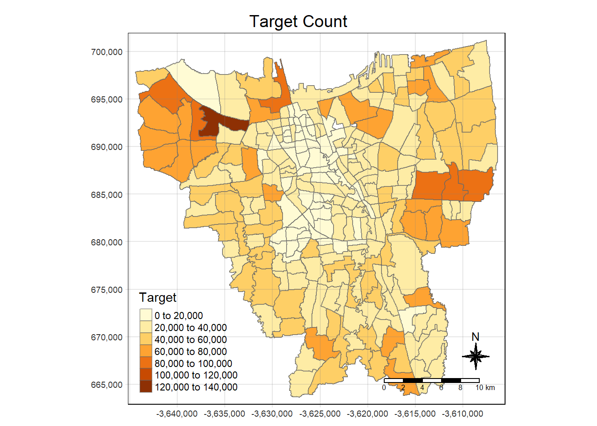
3.2.3 Not Yet Vaccinated
noVac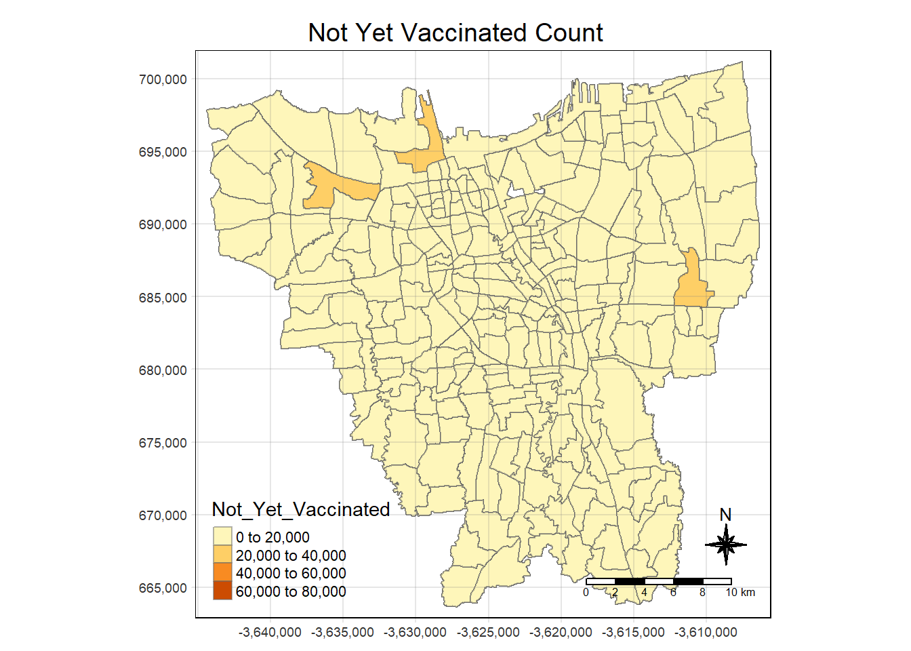
3.5 Vaccination Rate
3.5.1 Calculation of Rate
Calculating and pivoting vac rate by sub district and date
vaccRate <- vaccJak %>%
inner_join(jarMain, by=c("Sub_District" = "Sub_District")) %>%
group_by(Sub_District, Date) %>%
dplyr::summarise(`vaccRate` = ((Target - Not_Yet_Vaccinated) / Target)*100) %>%
ungroup() %>% pivot_wider(names_from = Date,
values_from = vaccRate)vaccRate# A tibble: 261 x 13
Sub_District 2021-~1 2021-~2 2021-~3 2021-~4 2021-~5 2021-~6 2022-~7 2022-~8
<chr> <dbl> <dbl> <dbl> <dbl> <dbl> <dbl> <dbl> <dbl>
1 ANCOL 48.5 61.6 72.1 75.0 76.9 78.9 80.6 80.8
2 ANGKE 52.8 64.6 74.2 77.7 79.6 80.9 81.7 81.9
3 BALE KAMBANG 37.0 57.0 70.0 73.9 76.6 78.2 79.5 79.7
4 BALI MESTER 47.0 62.0 74.2 78.2 80.3 81.7 82.8 83.1
5 BAMBU APUS 47.6 64.2 76.2 80.9 82.5 83.4 84.5 84.7
6 BANGKA 51.6 61.3 73.2 78.0 79.8 80.7 81.5 81.7
7 BARU 57.9 67.6 79.5 82.9 84.2 85.0 85.8 86.0
8 BATU AMPAR 39.8 58.4 70.6 74.5 77.1 78.8 80.1 80.4
9 BENDUNGAN HI~ 53.6 62.6 75.6 79.1 80.5 81.4 82.3 82.5
10 BIDARA CINA 40.6 57.6 71.0 75.2 77.0 78.2 79.2 79.5
# ... with 251 more rows, 4 more variables: `2022-03-31` <dbl>,
# `2022-04-30` <dbl>, `2022-05-31` <dbl>, `2022-06-30` <dbl>, and abbreviated
# variable names 1: `2021-07-31`, 2: `2021-08-31`, 3: `2021-09-30`,
# 4: `2021-10-31`, 5: `2021-11-30`, 6: `2021-12-31`, 7: `2022-01-31`,
# 8: `2022-02-27`3.5.2 Converting to SF Objects
comJak <- st_as_sf(comJak)
vaccRate <- vaccRate%>% left_join(jarMain, by=c("Sub_District"="Sub_District"))
vaccRate <- st_as_sf(vaccRate)4. Choropleth Map
4.1 Function Creation for Choropleth Map (w Jenks)
choroFun <- function(df, date) {
tm_shape(vaccRate) +
tm_polygons() +
tm_shape(df) +
tm_fill(date,
n= 5,
style = "jenks",
title = "Vaccination Rate") +
tm_layout(main.title = date,
main.title.size = 1,
main.title.position = "center") +
tm_borders(alpha = 0.5)
}4.2 Visualizing Vac Rate Per Month
4.2.1 Vac Rate from July to Oct 2021
tmap_mode("plot")
tmap_arrange(choroFun(vaccRate, "2021-07-31"),
choroFun(vaccRate, "2021-08-31"),
choroFun(vaccRate, "2021-09-30"),
choroFun(vaccRate, "2021-10-31"),
ncol = 2
)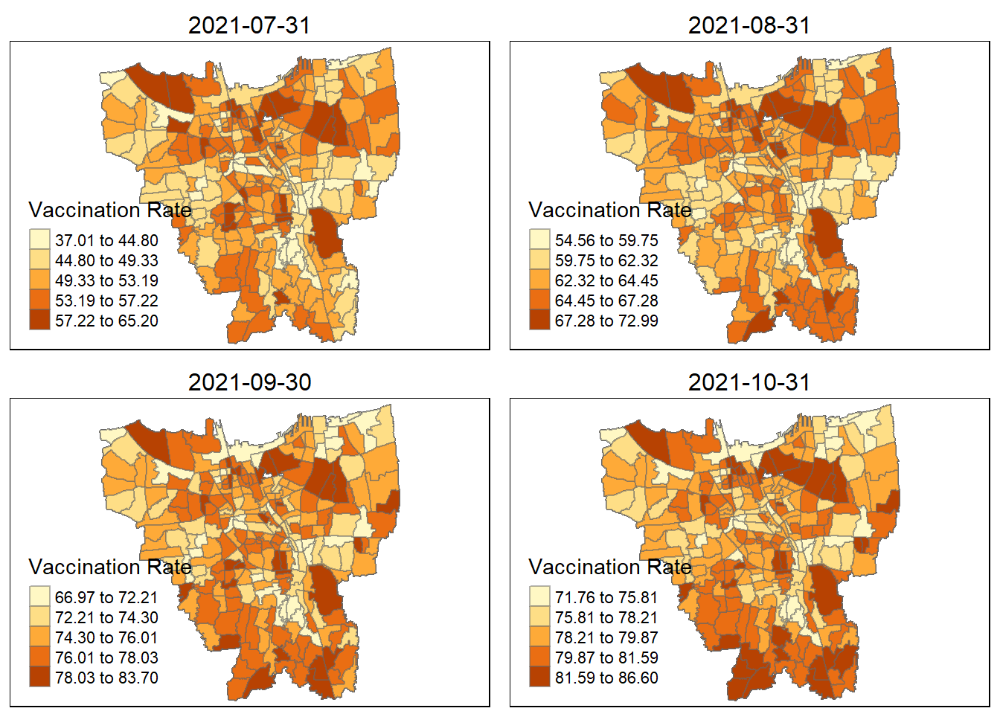
4.2.2 Vac Rate from Nov 2021 to Feb 2022
tmap_mode("plot")
tmap_arrange(choroFun(vaccRate, "2021-11-30"),
choroFun(vaccRate, "2021-12-31"),
choroFun(vaccRate, "2022-01-31"),
choroFun(vaccRate, "2022-02-27"),
ncol = 2
)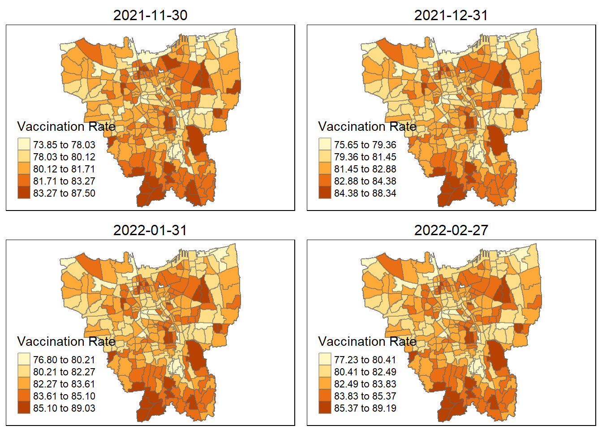
4.2.3 Vac Rate from Mar to Jun 2022
tmap_mode("plot")
tmap_arrange(choroFun(vaccRate, "2022-03-31"),
choroFun(vaccRate, "2022-04-30"),
choroFun(vaccRate, "2022-05-31"),
choroFun(vaccRate, "2022-06-30"),
ncol = 2
)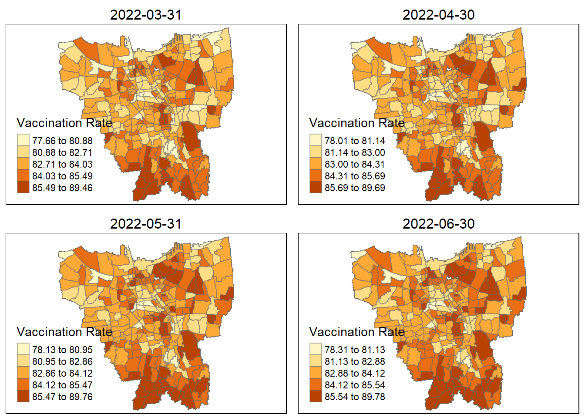
4.3 Custom Breaks
Creating custom breaks help us better visualize the map
4.3.1 Determining Breaks
summary(vaccRate$`2021-07-31`) Min. 1st Qu. Median Mean 3rd Qu. Max.
37.01 47.59 51.34 51.07 54.19 65.20 summary(vaccRate$`2021-08-31`) Min. 1st Qu. Median Mean 3rd Qu. Max.
54.56 61.94 63.50 63.64 65.40 72.99 summary(vaccRate$`2021-09-30`) Min. 1st Qu. Median Mean 3rd Qu. Max.
66.97 73.74 75.46 75.34 76.88 83.70 summary(vaccRate$`2021-10-31`) Min. 1st Qu. Median Mean 3rd Qu. Max.
71.76 77.98 79.37 79.25 80.77 86.60 summary(vaccRate$`2021-11-30`) Min. 1st Qu. Median Mean 3rd Qu. Max.
73.85 79.80 81.14 80.94 82.32 87.50 summary(vaccRate$`2021-12-31`) Min. 1st Qu. Median Mean 3rd Qu. Max.
75.65 80.97 82.08 82.01 83.20 88.34 summary(vaccRate$`2022-01-31`) Min. 1st Qu. Median Mean 3rd Qu. Max.
76.80 81.90 82.96 82.94 83.94 89.03 summary(vaccRate$`2022-02-27`) Min. 1st Qu. Median Mean 3rd Qu. Max.
77.23 82.18 83.17 83.16 84.15 89.19 summary(vaccRate$`2022-03-31`) Min. 1st Qu. Median Mean 3rd Qu. Max.
77.66 82.60 83.54 83.53 84.53 89.46 summary(vaccRate$`2022-04-30`) Min. 1st Qu. Median Mean 3rd Qu. Max.
78.01 82.95 83.80 83.84 84.89 89.69 summary(vaccRate$`2022-05-31`) Min. 1st Qu. Median Mean 3rd Qu. Max.
78.13 83.03 83.85 83.93 84.95 89.76 summary(vaccRate$`2022-06-30`) Min. 1st Qu. Median Mean 3rd Qu. Max.
78.31 83.18 84.03 84.08 85.05 89.78 4.3.2 Refactor Function w Breaks
choroFunWBreak <- function(df, date) {
tm_shape(vaccRate) +
tm_polygons() +
tm_shape(df) +
tm_fill(date,
breaks = c(37, 48, 60, 70, 85, 90),
n= 5,
title = "Vaccination Rate") +
tm_layout(main.title = date,
main.title.size = 1,
main.title.position = "center") +
tm_borders(alpha = 0.5)
}4.4 Visualizing Vac Rate (w Breaks)
4.4.1 Vac Rate from July to Oct 2021
tmap_mode("plot")
tmap_arrange(choroFunWBreak(vaccRate, "2021-07-31"),
choroFunWBreak(vaccRate, "2021-08-31"),
choroFunWBreak(vaccRate, "2021-09-30"),
choroFunWBreak(vaccRate, "2021-10-31"),
ncol = 2
)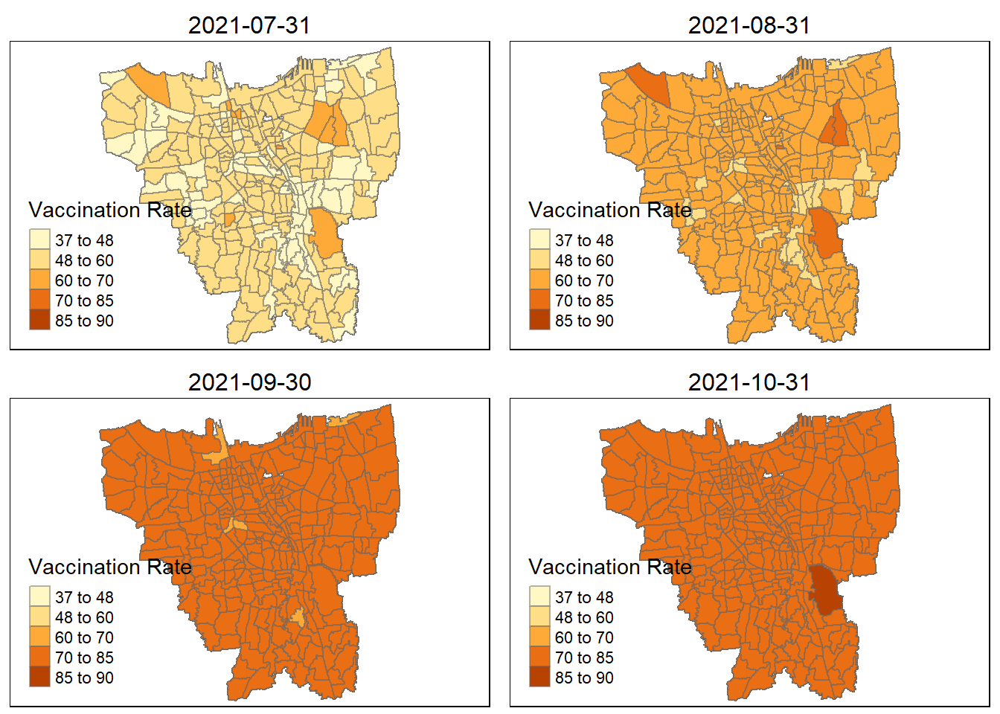
4.4.2 Vac Rate from Nov 2021 to Feb 2022
tmap_mode("plot")
tmap_arrange(choroFunWBreak(vaccRate, "2021-11-30"),
choroFunWBreak(vaccRate, "2021-12-31"),
choroFunWBreak(vaccRate, "2022-01-31"),
choroFunWBreak(vaccRate, "2022-02-27"),
ncol = 2
)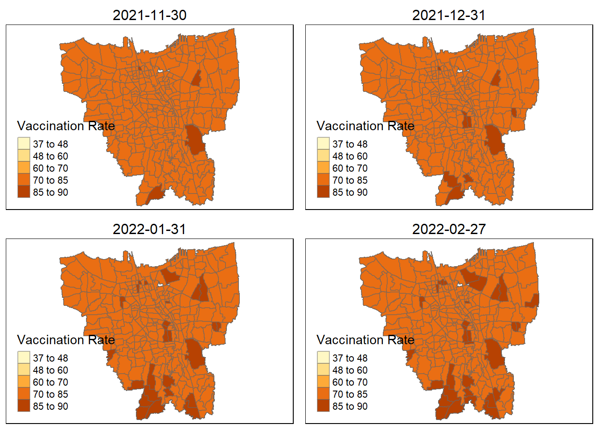
4.4.3 Vac Rate from Mar to Jun 2022
tmap_mode("plot")
tmap_arrange(choroFunWBreak(vaccRate, "2022-03-31"),
choroFunWBreak(vaccRate, "2022-04-30"),
choroFunWBreak(vaccRate, "2022-05-31"),
choroFunWBreak(vaccRate, "2022-06-30"),
ncol = 2
)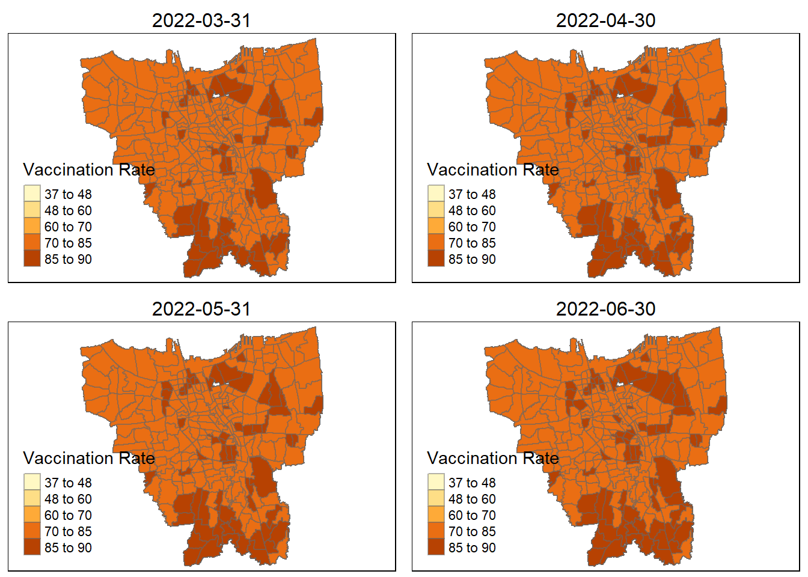
Note
From the map shown above, we can see that within the month of 2021-07-31 to 2021-07-31, most of the sub districts vaccination rate is more than 60, and the following month increased to more than 70.
When it reaches 2021-10-31, the rate increases to 70 while having 1 state at 85 and above.
However, we can see that there is a slow down of vaccination rate from 70 - 85 range to 85 - 90 range. At 2022-06-30, we can see that those in the range of 85 - 90 is mainly located at the South side, with more states towards the Center and East side slowly catching up.
5. Local Gi* Analysis
5.1 Creating Attribute Table
vaccAtt <- comJak %>%
select(10, 8, 11, 12) %>%
st_drop_geometry()
vaccAtt$Vaccination_Rate <- ((vaccAtt$Target - vaccAtt$Not_Yet_Vaccinated) / vaccAtt$Target) * 100
vaccAtt <- tibble(vaccAtt %>% select(1, 2, 5))vaccAtt# A tibble: 3,132 x 3
Date Sub_District Vaccination_Rate
<date> <chr> <dbl>
1 2022-02-27 KEAGUNGAN 84.2
2 2022-04-30 KEAGUNGAN 85.1
3 2022-06-30 KEAGUNGAN 85.3
4 2021-11-30 KEAGUNGAN 82.2
5 2021-09-30 KEAGUNGAN 75.8
6 2021-08-31 KEAGUNGAN 65.2
7 2021-12-31 KEAGUNGAN 83.2
8 2022-01-31 KEAGUNGAN 84.0
9 2021-07-31 KEAGUNGAN 53.3
10 2022-03-31 KEAGUNGAN 84.6
# ... with 3,122 more rows5.2 Creating Time Series Cube
vaccRateST <- spacetime(vaccAtt, jarMain,
.loc_col = "Sub_District",
.time_col = "Date")is_spacetime_cube(vaccRateST)[1] TRUE5.3 Deriving Spatial Weights
vaccRateNB <- vaccRateST %>%
activate("geometry") %>%
mutate(nb = include_self(st_contiguity(geometry)),
wt = st_inverse_distance(nb, geometry, scale = 1, alpha = 1),
.before = 1) %>%
set_nbs("nb") %>%
set_wts("wt")head(vaccRateNB)# A tibble: 6 x 5
Date Sub_District Vaccination_Rate nb wt
<date> <chr> <dbl> <list> <list>
1 2021-07-31 KEAGUNGAN 53.3 <int [6]> <dbl [6]>
2 2021-07-31 GLODOK 61.6 <int [7]> <dbl [7]>
3 2021-07-31 HARAPAN MULIA 49.7 <int [6]> <dbl [6]>
4 2021-07-31 CEMPAKA BARU 46.7 <int [7]> <dbl [7]>
5 2021-07-31 PASAR BARU 59.3 <int [9]> <dbl [9]>
6 2021-07-31 KARANG ANYAR 52.2 <int [7]> <dbl [7]>5.4 Computing Gi* Value
5.4.1 Setting Seed
set.seed(1234)5.4.2 Computing Gi* Value
jakGi <- vaccRateNB %>%
group_by(Date) %>%
mutate(gi_star = local_gstar_perm(
Vaccination_Rate, nb, wt, nsim=99))%>%
unnest(gi_star)jakGi# A tibble: 3,132 x 13
# Groups: Date [12]
Date Sub_District Vacci~1 nb wt gi_star e_gi var_gi p_value
<date> <chr> <dbl> <lis> <lis> <dbl> <dbl> <dbl> <dbl>
1 2021-07-31 KEAGUNGAN 53.3 <int> <dbl> -5.13 3.17e-4 2.95e-10 2.83e- 7
2 2021-07-31 GLODOK 61.6 <int> <dbl> -4.91 3.18e-4 2.81e-10 9.04e- 7
3 2021-07-31 HARAPAN MUL~ 49.7 <int> <dbl> -6.54 3.19e-4 2.69e-10 6.18e-11
4 2021-07-31 CEMPAKA BARU 46.7 <int> <dbl> -7.88 3.21e-4 2.25e-10 3.23e-15
5 2021-07-31 PASAR BARU 59.3 <int> <dbl> -6.98 3.20e-4 1.78e-10 3.04e-12
6 2021-07-31 KARANG ANYAR 52.2 <int> <dbl> -7.22 3.20e-4 1.82e-10 5.30e-13
7 2021-07-31 MANGGA DUA ~ 51.6 <int> <dbl> -8.12 3.20e-4 1.50e-10 4.83e-16
8 2021-07-31 PETOJO UTARA 47.2 <int> <dbl> -6.69 3.19e-4 2.77e-10 2.22e-11
9 2021-07-31 SENEN 54.4 <int> <dbl> -7.75 3.19e-4 1.69e-10 9.44e-15
10 2021-07-31 BUNGUR 52.8 <int> <dbl> -7.79 3.20e-4 1.80e-10 6.86e-15
# ... with 3,122 more rows, 4 more variables: p_sim <dbl>, p_folded_sim <dbl>,
# skewness <dbl>, kurtosis <dbl>, and abbreviated variable name
# 1: Vaccination_Rate5.5 Combining Gi* Value with Com Jak
comJakGi <- comJak %>%
left_join(jakGi)comJakGiSimple feature collection with 3132 features and 23 fields
Geometry type: MULTIPOLYGON
Dimension: XY
Bounding box: xmin: -3644407 ymin: 663658 xmax: -3606364 ymax: 701158.1
Projected CRS: DGN95 / Indonesia TM-3 zone 54.1
First 10 features:
Object_Id Village_Code Village Code Province City District
1 25477 3173031006 KEAGUNGAN 317303 DKI JAKARTA JAKARTA BARAT TAMAN SARI
2 25477 3173031006 KEAGUNGAN 317303 DKI JAKARTA JAKARTA BARAT TAMAN SARI
3 25477 3173031006 KEAGUNGAN 317303 DKI JAKARTA JAKARTA BARAT TAMAN SARI
4 25477 3173031006 KEAGUNGAN 317303 DKI JAKARTA JAKARTA BARAT TAMAN SARI
5 25477 3173031006 KEAGUNGAN 317303 DKI JAKARTA JAKARTA BARAT TAMAN SARI
6 25477 3173031006 KEAGUNGAN 317303 DKI JAKARTA JAKARTA BARAT TAMAN SARI
7 25477 3173031006 KEAGUNGAN 317303 DKI JAKARTA JAKARTA BARAT TAMAN SARI
8 25477 3173031006 KEAGUNGAN 317303 DKI JAKARTA JAKARTA BARAT TAMAN SARI
9 25477 3173031006 KEAGUNGAN 317303 DKI JAKARTA JAKARTA BARAT TAMAN SARI
10 25477 3173031006 KEAGUNGAN 317303 DKI JAKARTA JAKARTA BARAT TAMAN SARI
Sub_District Total_Population Date Target Not_Yet_Vaccinated
1 KEAGUNGAN 21609 2022-02-27 17387 2755
2 KEAGUNGAN 21609 2022-04-30 17387 2593
3 KEAGUNGAN 21609 2022-06-30 17387 2553
4 KEAGUNGAN 21609 2021-11-30 17387 3099
5 KEAGUNGAN 21609 2021-09-30 17387 4203
6 KEAGUNGAN 21609 2021-08-31 17387 6054
7 KEAGUNGAN 21609 2021-12-31 17387 2924
8 KEAGUNGAN 21609 2022-01-31 17387 2783
9 KEAGUNGAN 21609 2021-07-31 17387 8126
10 KEAGUNGAN 21609 2022-03-31 17387 2675
Vaccination_Rate nb
1 84.15483 1, 2, 39, 152, 158, 166
2 85.08656 1, 2, 39, 152, 158, 166
3 85.31662 1, 2, 39, 152, 158, 166
4 82.17634 1, 2, 39, 152, 158, 166
5 75.82677 1, 2, 39, 152, 158, 166
6 65.18088 1, 2, 39, 152, 158, 166
7 83.18284 1, 2, 39, 152, 158, 166
8 83.99379 1, 2, 39, 152, 158, 166
9 53.26393 1, 2, 39, 152, 158, 166
10 84.61494 1, 2, 39, 152, 158, 166
wt
1 0.000000000, 0.001071741, 0.001039078, 0.001417547, 0.001110431, 0.001297072
2 0.000000000, 0.001071741, 0.001039078, 0.001417547, 0.001110431, 0.001297072
3 0.000000000, 0.001071741, 0.001039078, 0.001417547, 0.001110431, 0.001297072
4 0.000000000, 0.001071741, 0.001039078, 0.001417547, 0.001110431, 0.001297072
5 0.000000000, 0.001071741, 0.001039078, 0.001417547, 0.001110431, 0.001297072
6 0.000000000, 0.001071741, 0.001039078, 0.001417547, 0.001110431, 0.001297072
7 0.000000000, 0.001071741, 0.001039078, 0.001417547, 0.001110431, 0.001297072
8 0.000000000, 0.001071741, 0.001039078, 0.001417547, 0.001110431, 0.001297072
9 0.000000000, 0.001071741, 0.001039078, 0.001417547, 0.001110431, 0.001297072
10 0.000000000, 0.001071741, 0.001039078, 0.001417547, 0.001110431, 0.001297072
gi_star e_gi var_gi p_value p_sim p_folded_sim
1 -4.148510 0.0003184021 2.953413e-10 3.346461e-05 0.02 0.01
2 -4.730787 0.0003186086 2.249538e-10 2.236511e-06 0.02 0.01
3 -5.112686 0.0003204174 2.017972e-10 3.176099e-07 0.02 0.01
4 -4.660924 0.0003188878 2.448973e-10 3.147932e-06 0.02 0.01
5 -5.791609 0.0003181470 1.718401e-10 6.971549e-09 0.02 0.01
6 -4.940322 0.0003191377 2.832933e-10 7.799349e-07 0.02 0.01
7 -4.270179 0.0003169345 2.717739e-10 1.953157e-05 0.02 0.01
8 -5.200118 0.0003188126 1.906391e-10 1.991626e-07 0.02 0.01
9 -5.134422 0.0003172134 2.951801e-10 2.830127e-07 0.02 0.01
10 -5.684511 0.0003221341 1.729464e-10 1.311876e-08 0.02 0.01
skewness kurtosis geometry
1 -0.7361674 -0.1454841 MULTIPOLYGON (((-3627004 69...
2 -0.3317697 -0.5930501 MULTIPOLYGON (((-3627004 69...
3 -0.2461323 -0.8701698 MULTIPOLYGON (((-3627004 69...
4 -0.9926916 1.5306415 MULTIPOLYGON (((-3627004 69...
5 -0.1422052 -0.5629658 MULTIPOLYGON (((-3627004 69...
6 -0.6632312 -0.4379797 MULTIPOLYGON (((-3627004 69...
7 -0.7170277 0.2119119 MULTIPOLYGON (((-3627004 69...
8 -0.2851140 -0.5277670 MULTIPOLYGON (((-3627004 69...
9 -0.7029525 -0.1907527 MULTIPOLYGON (((-3627004 69...
10 -0.6200221 0.4378114 MULTIPOLYGON (((-3627004 69...5.6 Visualizing Gi* Value
5.6.1 Function Creation for Gi* Value
summary(comJakGi$p_sim) Min. 1st Qu. Median Mean 3rd Qu. Max.
0.02000 0.02000 0.02000 0.02018 0.02000 0.06000 giPlotFun <- function(date) {
GI = tm_shape(filter(comJakGi, Date == date)) +
tm_fill("gi_star") +
tm_borders(alpha = 0.5) +
tm_layout(main.title = paste("Gi* of Vaccination Rate", date),
main.title.size = 0.7)
PVal = tm_shape(filter(comJakGi, Date == date)) +
tm_fill("p_sim") +
tm_borders(alpha = 0.5) +
tm_layout(main.title = paste("P-value of Vaccination Rate", date),
main.title.size = 0.7)
tmap_arrange(GI, PVal)
}5.6.2 Gi* and P-Value for July 21
tmap_mode("plot")
giPlotFun("2021-07-31")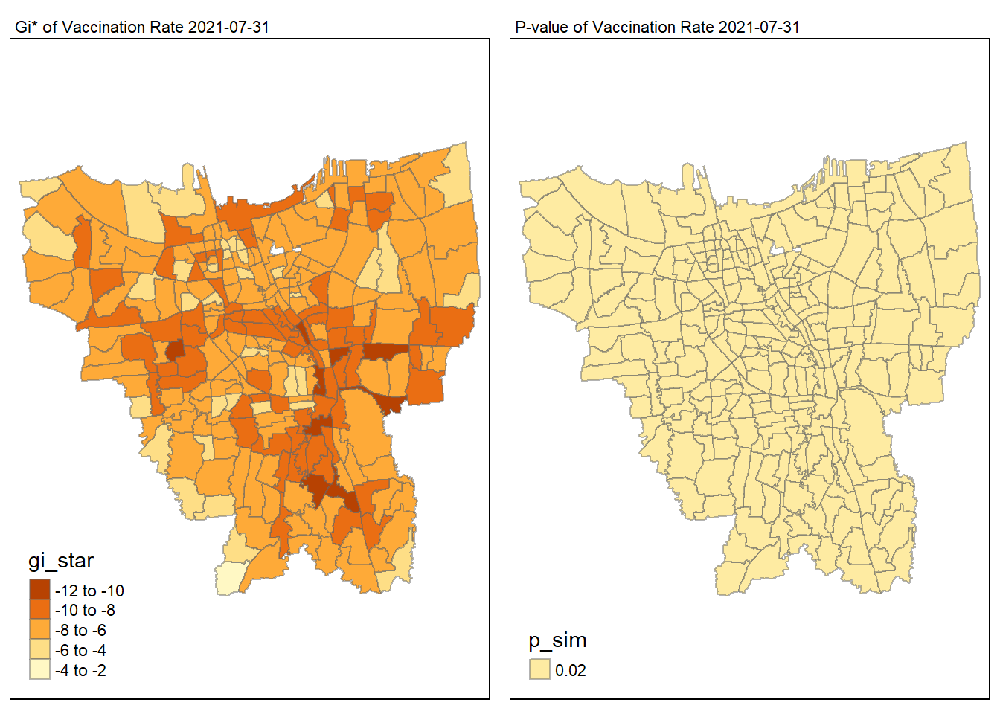
5.6.3 Gi* and P-Value for Aug 21
tmap_mode("plot")
giPlotFun("2021-08-31")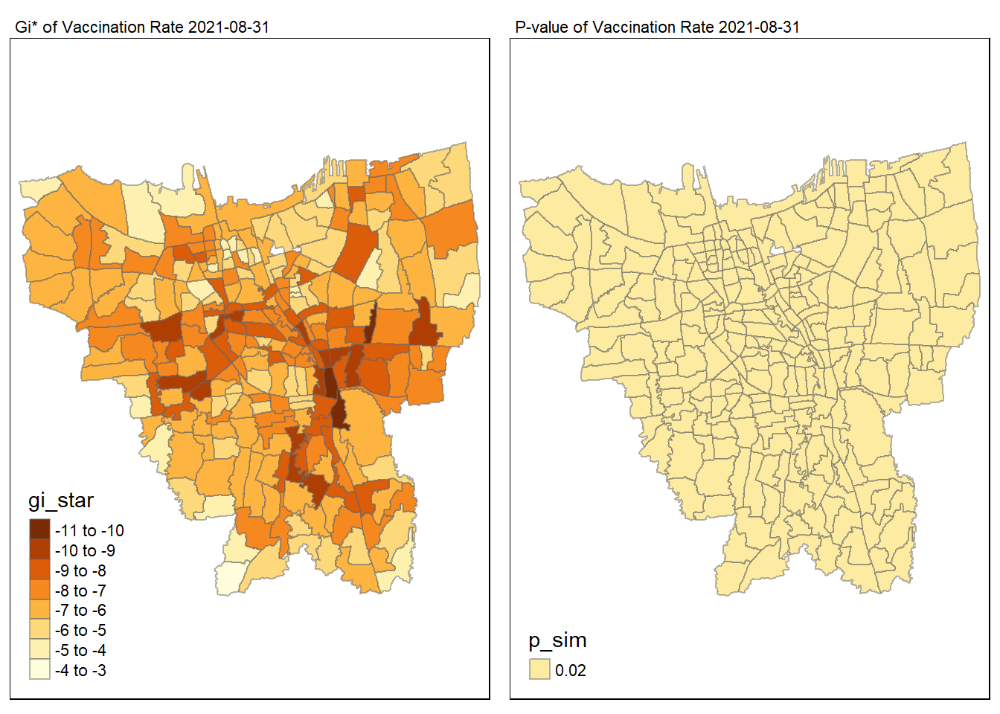
5.6.4 Gi* and P-Value for Sep 21
tmap_mode("plot")
giPlotFun("2021-09-30")5.6.5 Gi* and P-Value for Oct 21
tmap_mode("plot")
giPlotFun("2021-10-31")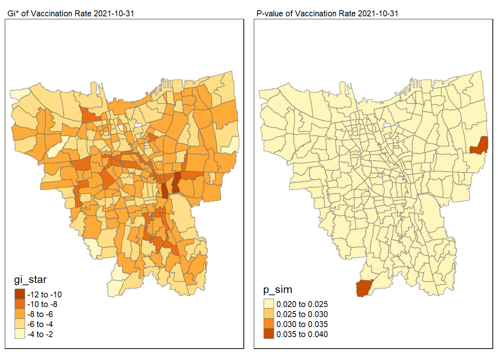
5.6.6 Gi* and P-Value for Nov 21
tmap_mode("plot")
giPlotFun("2021-11-30")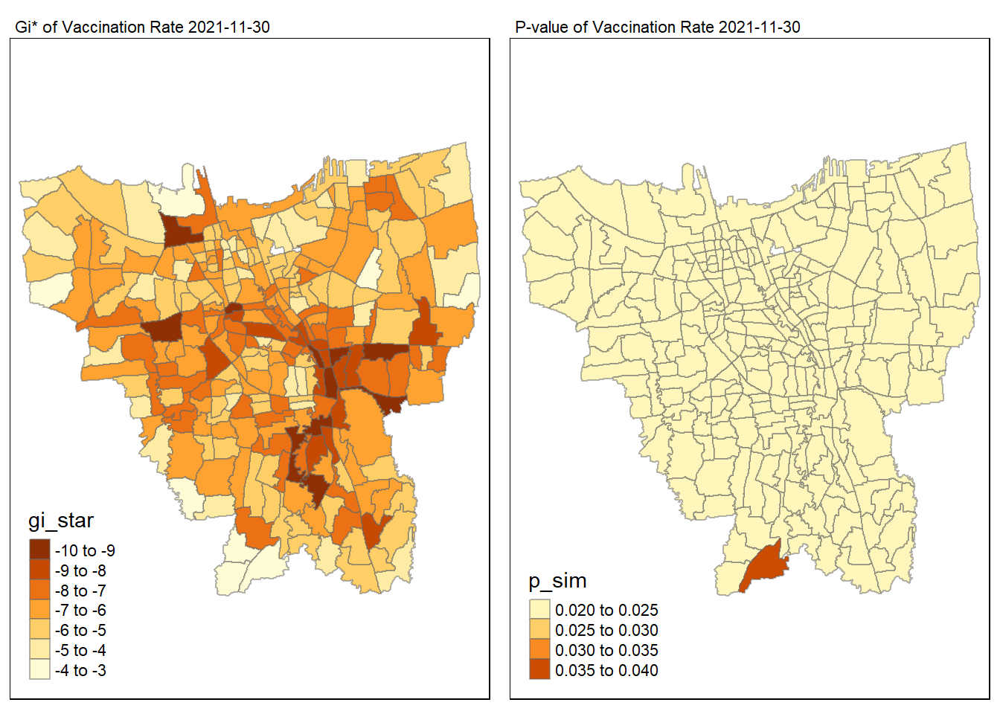
5.6.7 Gi* and P-Value for Dec 21
tmap_mode("plot")
giPlotFun("2021-12-31")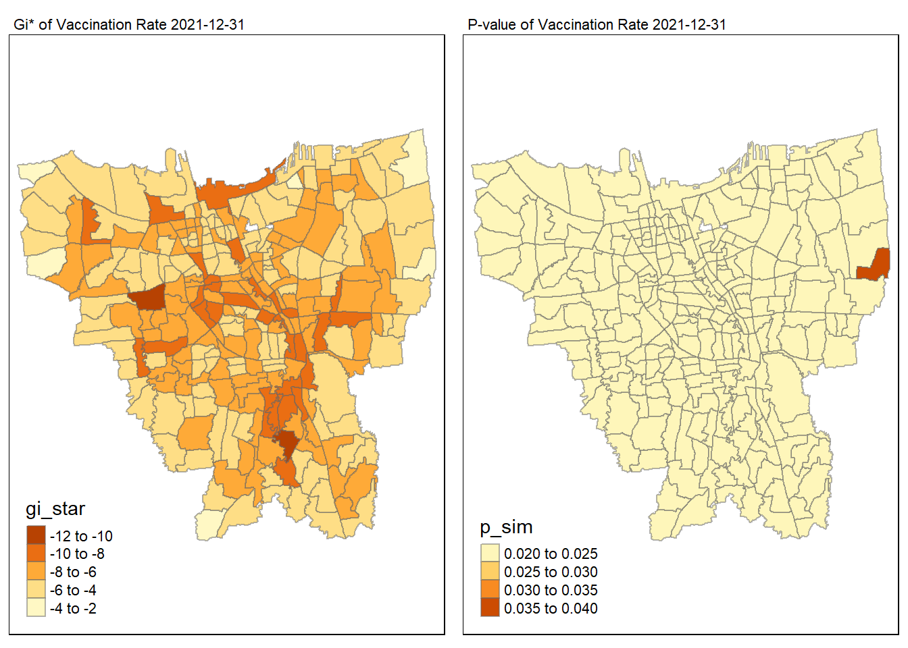
5.6.8 Gi* and P-Value for Jan 22
tmap_mode("plot")
giPlotFun("2022-01-31")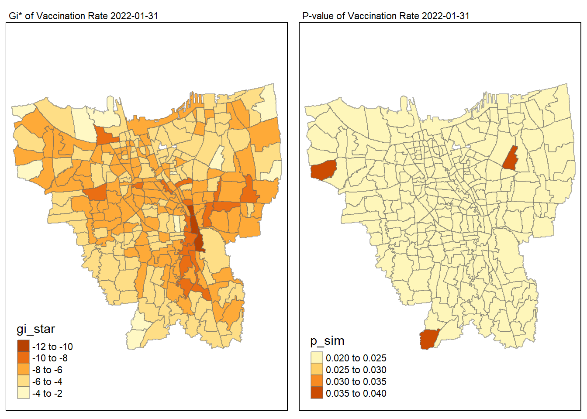
5.6.9 Gi* and P-Value for Feb 22
tmap_mode("plot")
giPlotFun("2022-02-27")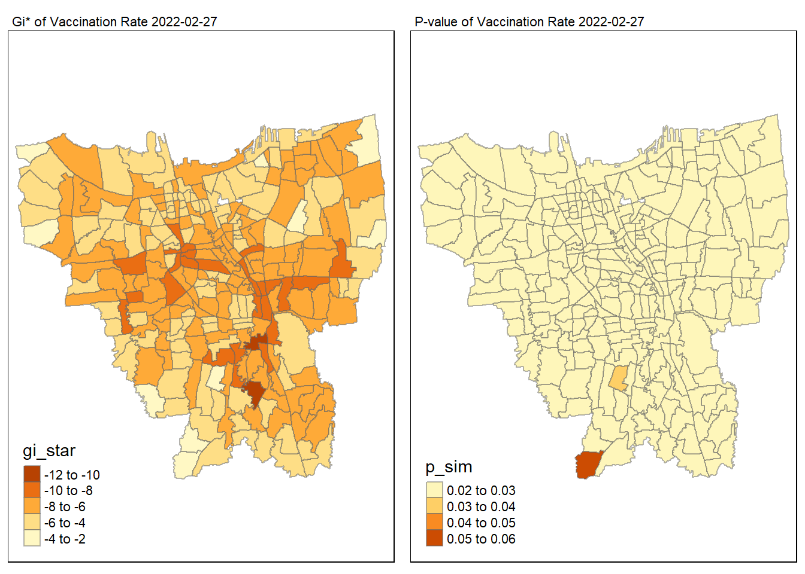
5.6.10 Gi* and P-Value for Mar 22
tmap_mode("plot")
giPlotFun("2022-03-31")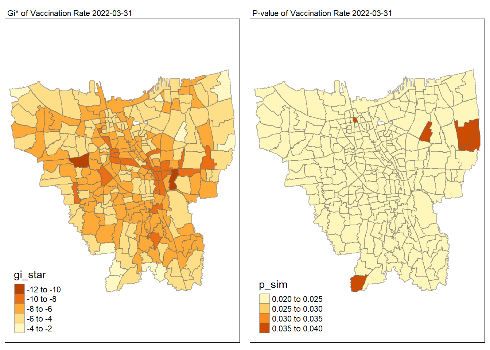
5.6.11 Gi* and P-Value for Apr 22
tmap_mode("plot")
giPlotFun("2022-04-30")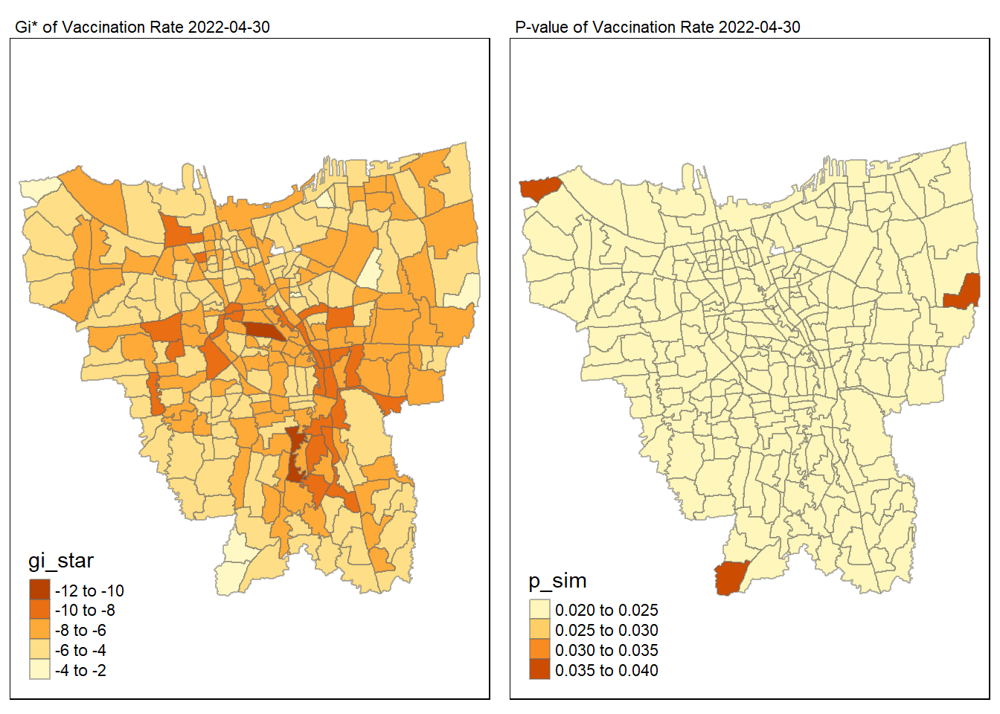
5.6.12 Gi* and P-Value for May 22
tmap_mode("plot")
giPlotFun("2022-05-31")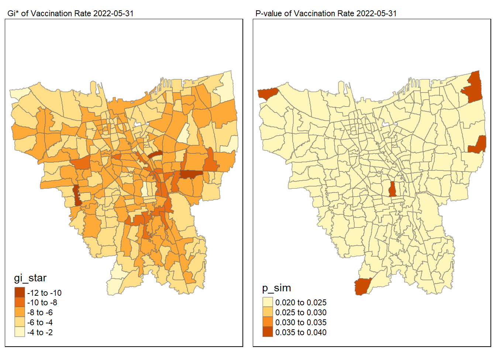
5.6.13 Gi* and P-Value for Jun 22
tmap_mode("plot")
giPlotFun("2022-06-30")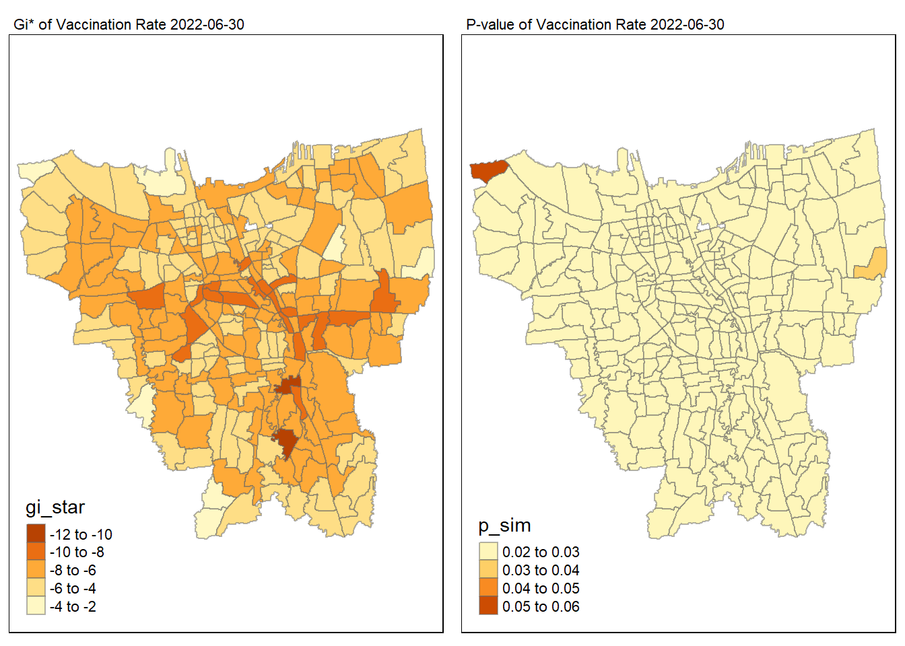
5.7 Visualizing p_sim < 0.05
jakPFilter <- comJakGi %>%
filter(p_sim < 0.05)
tmap_mode("plot")
tm_shape(comJakGi) +
tm_fill("p_sim")+
tm_polygons() 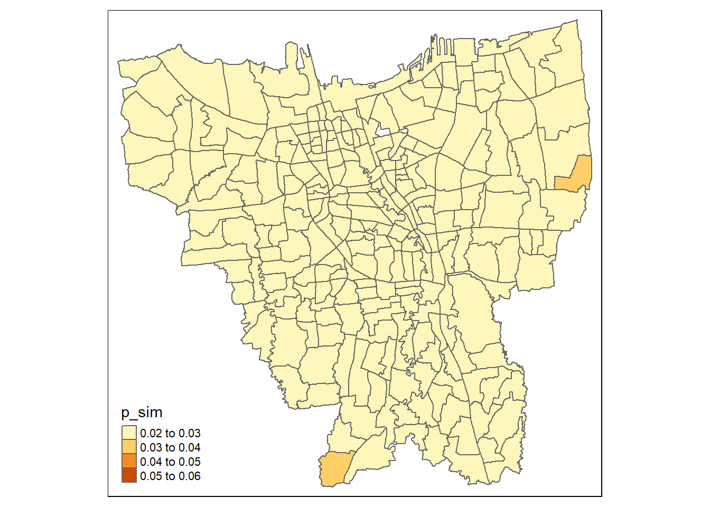
Note
We can see that most of Jakata’s p_sim value is < 0.05, which is less than the significance level, we can reject the null hypothesis and conclude that there is sufficient evidence that the vaccination rate is significant.
6. Emerging Hot Spot Analysis (EHSA)
6.1 Mann-Kendal Test
6.1.1 Sub-District 1 - TAMAN SARI
cbg <- jakGi %>%
ungroup() %>%
filter(Sub_District == "TAMAN SARI") %>%
select(Sub_District, Date, gi_star)p <- ggplot(data = cbg,
aes(x = Date,
y = gi_star)) +
geom_line() +
theme_light()
ggplotly(p)cbg %>%
summarise(mk = list(
unclass(
Kendall::MannKendall(gi_star)))) %>%
tidyr::unnest_wider(mk)# A tibble: 1 x 5
tau sl S D varS
<dbl> <dbl> <dbl> <dbl> <dbl>
1 0.152 0.537 10 66.0 213.
Note
Since the P value of 0.53 is > 0.05, the p-value is not significant. Results show an overall upwards trend but is an insignificant trend.
6.1.2 Sub-District 2 - GAMBIR
cbg <- jakGi %>%
ungroup() %>%
filter(Sub_District == "GAMBIR") %>%
select(Sub_District, Date, gi_star)p <- ggplot(data = cbg,
aes(x = Date,
y = gi_star)) +
geom_line() +
theme_light()
ggplotly(p)cbg %>%
summarise(mk = list(
unclass(
Kendall::MannKendall(gi_star)))) %>%
tidyr::unnest_wider(mk)# A tibble: 1 x 5
tau sl S D varS
<dbl> <dbl> <dbl> <dbl> <dbl>
1 -0.0606 0.837 -4 66.0 213.
Note
Since the P value of 0.8 is > 0.05, the p-value is not significant. Results show an overall upwards trend but is an insignificant trend.
6.1.3 Sub-District 2 - SENEN
cbg <- jakGi %>%
ungroup() %>%
filter(Sub_District == "SENEN") %>%
select(Sub_District, Date, gi_star)p <- ggplot(data = cbg,
aes(x = Date,
y = gi_star)) +
geom_line() +
theme_light()
ggplotly(p)cbg %>%
summarise(mk = list(
unclass(
Kendall::MannKendall(gi_star)))) %>%
tidyr::unnest_wider(mk)# A tibble: 1 x 5
tau sl S D varS
<dbl> <dbl> <dbl> <dbl> <dbl>
1 0.121 0.631 8 66.0 213.
Note
Since the P value of 0.6 is > 0.05, the p-value is not significant. Results show an overall upwards trend at the start but is an insignificant trend.
6.2 EHSA map of Gi* Values of Vaccination Rate
ehsa <- jakGi %>%
group_by(Sub_District) %>%
summarise(mk = list(
unclass(
Kendall::MannKendall(gi_star)))) %>%
tidyr::unnest_wider(mk)6.2.1 Arrange to show Significant Emerging Hot/Cold Spots
emerging <- ehsa %>%
arrange(sl, abs(tau)) %>%
slice(1:5)6.2.2 Performing Emerging Hotspot Analysis
ehsa <- emerging_hotspot_analysis(
x = vaccRateST,
.var = "Vaccination_Rate",
k = 1,
nsim = 99
)6.2.3 Visualizing Distribution of EHSA Classes
ggplot(data = ehsa,
aes(x = classification, fill = classification)) +
geom_bar()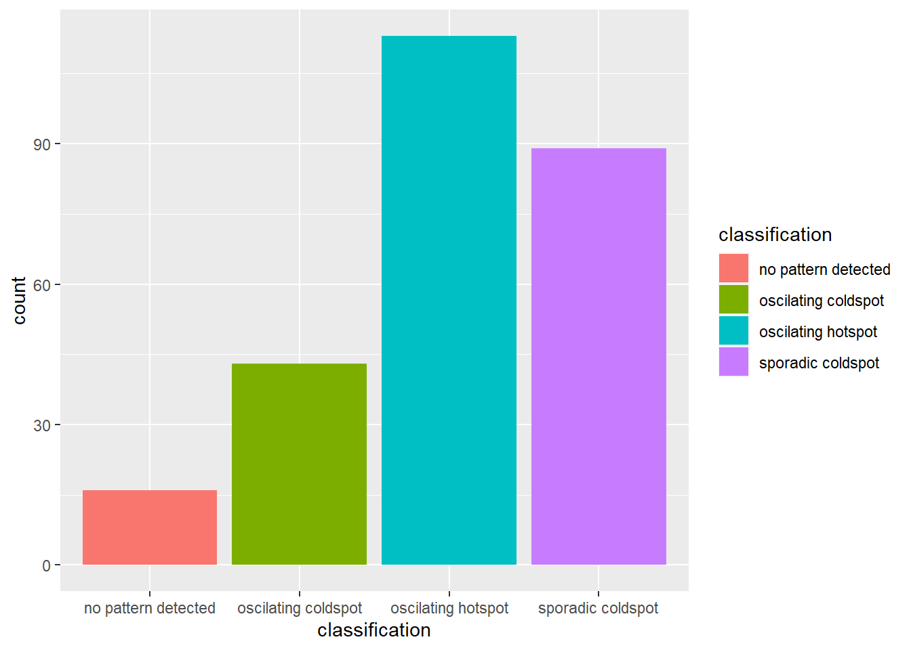
6.2.4 Visualizing EHSA
jakEHSA <- comJak %>%
left_join(ehsa,
by = c("Sub_District" = "location"))6.2.5 Plotting Categorical Choropleth Map
ehsaSIG <- jakEHSA %>%
filter(p_value < 0.05)
tmap_mode("plot")
tm_shape(jakEHSA) +
tm_polygons() +
tm_borders(alpha = 0.5) +
tm_shape(ehsaSIG) +
tm_fill("classification") +
tm_borders(alpha = 0.4)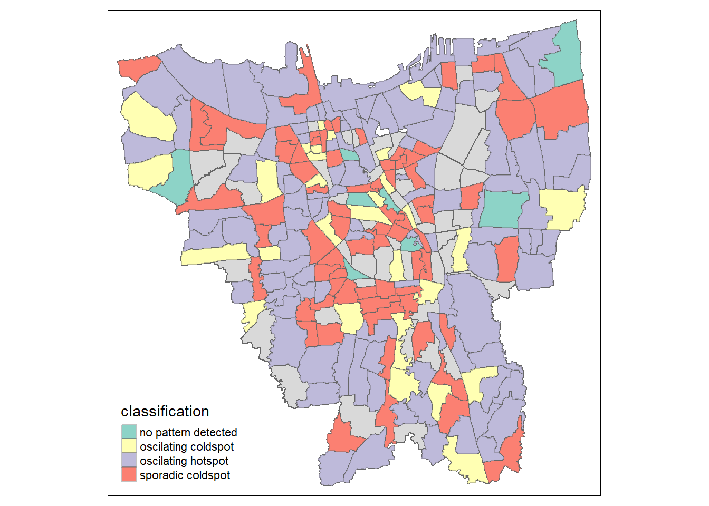
Note
We can see that the map is mostly Oscilating Hotspot compared to the rest. And Oscilating Coldspot being the least (Excluding no pattern detected).
Oscilating Hotspot
- From the map, it shows that it is spread out quite evenly
Oscilating Coldspot
- Shows that is it spread out quite evenly but less on the north and east areas
Sporadic Coldspot
- Shows that is it more concentrated to the center and lesser as it goes towards the outer areas
No pattern
- Shows that it is located more towards the central area with non at the south area
Overall, it seems like the center area seems to have more variety of patterns compared to the outer layers.